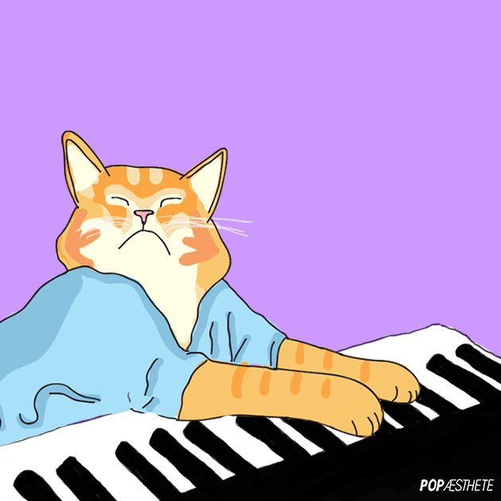

Keyboard Cat is an Internet meme. It consists of a video from 1984 of a female cat called "Fatso" wearing a blue shirt and "playing" an upbeat rhythm on an electronic keyboard. The video was posted to YouTube under the title "charlie schmidt's cool cats" in June 2007. Schmidt later changed the title to "Charlie Schmidt's Keyboard Cat (THE ORIGINAL)".
